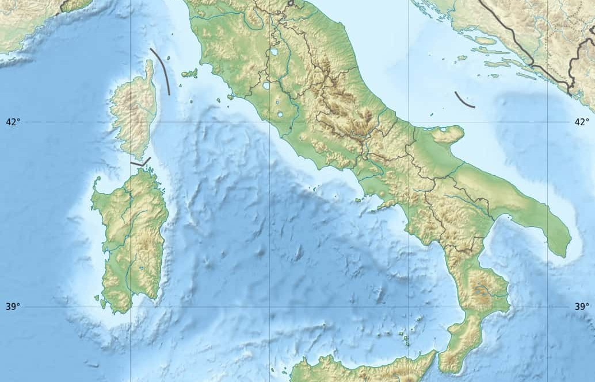

the bel paese stivale
The place where marvelous nature and food meet
ByLucasdt
December 21, 2022
December 21, 2022


Italy is the country in the middle of the Mediterranean Region. Its territory includes the Italian Peninsula, northwestern tip of the Balkan Peninsula, southern edge of Alps and range of islands. Italy is washed by the Adriatic, Ionic, Liguria and Tyrrhenian Seas. Territory of the country is mostly mountainous with Alps in inland Italy and Apennines on the Italian Peninsula.
Nature in Italy is as diverse as the local dialects. Mountains grace the planes of the north (hello Dolomites!), craggy shorelines dotted with tiny little houses (Amalfi coast anyone) and active vulcanos waiting to be explored (Mount Etna is calling) are there for the picking. Veer away from the overcrowded cities and head out into the spectacular natural beauty the country holds.
Mountains occupy a significant part of Italy. The country's north is the zone of the Alpine mountain system with a highly varied relief and amazing natural diversity. The southern slopes of the Alps with the highest point of Western Europe, Mount Mont Blanc (4810 m) form a complex system of ridges and valleys, covered with dense forests alternating and beautiful alpine meadows.
“You may have the world if I may have Italy”
Italian cuisine includes deeply rooted traditions common to the whole country, as well as all the regional gastronomies, different from each other, especially between the north, the centre and the south of Italy, which are in continuous exchange. Many dishes that were once regional have proliferated with variations throughout the country. Italian cuisine offers an abundance of taste, and is one of the most popular and copied around the world. The cuisine has influenced several other cuisines around the world, chiefly that of the United States.
One of the main characteristics of Italian cuisine is its simplicity, with many dishes made up of few ingredients, and therefore Italian cooks often rely on the quality of the ingredients, rather than the complexity of preparation.
The Mediterranean diet forms the basis of Italian cuisine, rich in pasta, fish, fruits and vegetables. Cheese, cold cuts and wine are central to Italian cuisine, and along with pizza and coffee (especially espresso) form part of Italian gastronomic culture.
Desserts have a long tradition of merging local flavours such as citrus fruits, pistachio and almonds with sweet cheeses like mascarpone and ricotta or exotic tastes as cocoa, vanilla and cinnamon.
Gelato, tiramisù and cassata are among the most famous examples of Italian desserts, cakes and patisserie. Italian cuisine relies heavily on traditional products; the country has a large number of traditional specialities protected under EU law. Italy is the world's largest producer of wine, as well as the country with the widest variety of indigenous grapevine varieties in the world.
Italian cuisine has developed over the centuries. Although the country known as Italy did not unite until the 19th century, the cuisine can claim traceable roots as far back as the 4th century BC. Food and culture were very important at that time evident from the cookbook (Apicius) which dates to the first century BC.
A Brief
History of the country
V1 - 1861
The Kingdom of Italy (Italian: Regno d'Italia) was a state that existed from 1861, when Victor Emmanuel II of Sardinia was proclaimed King of Italy.
V2 - 1915
While World War I is raging in Europe, Italy debates its entry into the war. Originally part the Triple Alliance with Germany and Austria-Hungary, Italy secretly negotiates with the Triple Entente trying to fulfil Italy’s irredentist claims.
V3 - 1935
The Second Italo-Ethiopian War, also referred to as the Second Italo-Abyssinian War, was a war of aggression which was fought between Italy and Ethiopia from October 1935 to February 1937.
V4 - 1940
In a meeting with Adolf Hitler at the Brenner Pass, Benito Mussolini undertakes to bring Italy into World War II.
V5 - 1946
Following the civil war and the Liberation of Italy from Axis troops in 1945, a popular referendum on the institutional form of the state was called and resulted in voters choosing the replacement of the monarchy with a republic.
V6 - 1955
Italy joins the United Nations, along with fifteen other states, after years of stalemate due to opposed vetoes between the United States and the Soviet Union.
“Love and understand the Italians, for the people are more marvelous than the land.”
